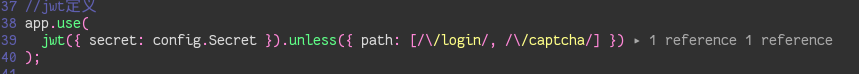
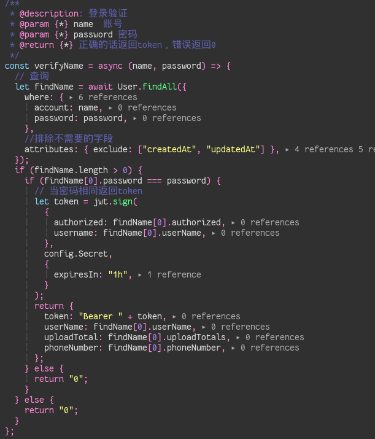
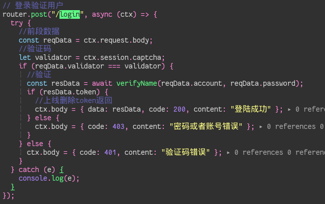

一般应用

完整这一段代码
1 | jwt = require("koa-jwt"); |
首先要有一个 secret 值用于在客户端与服务期交互时进行校验的密钥,unless 用数组来装入你所需要排除验证的路径的正则.
所以上面的代码表示,只有 /login,和 /captcha 路径的访问不需要验证 token,其他路径访问都需要验证 jwt
如何做一个登录验证并发送 token 到前端

首先编写一个校验函数，我这里是演示就不做加解密密码了，直接明文传输,verifyName 函数接受两个参数,帐号和密码,然后用 sequelize.findAll 来根据查询的帐号和密码确认身份,如果查询到相符的用户构造一个 token，jwt.sign()的第一个参数是一个对象，我用传的是当前用户的权限 authorized 和 userName(这两个字段都是数据库表里的字段)这样可以比较方便的对后续用户访问不同的路径更具权限来做限制,第二个参数是你的 secret 值,第三个是 token 的有效时间我这里设置的是 1h,然后返回一个对象包含了 token 和当前用户表的一些字段 Bearer 后面一定要有一个空格！！！！一定要

首先获取到前端传过来的数据 reqData 然后做校验当用户身份确认(verifyName 和 validator 函数都是我自己的校验函数,验证码可能之后会写.)当用户身份确认把校验通过返回的 token 传输给前端 resData 就是我校验函数校验之后返回的值
基本这样就可以构成一个基本的 jwt 校验